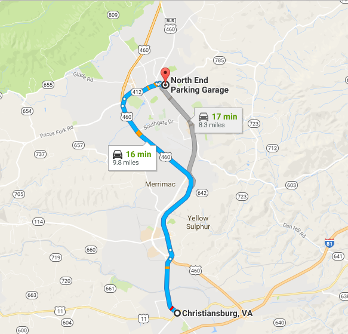
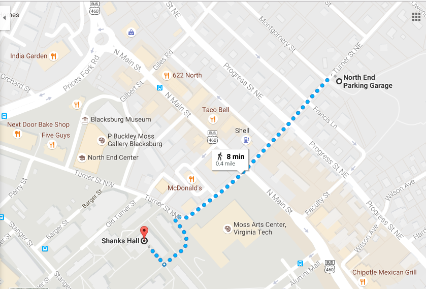

How to Get to Shanks Hall from Christiansburg
Travelling from Christansburg to Shanks Hall in a car will take 24 minutes.

- Get on US-460 W.
- FollowUS-460 W to VA-412 N/Prices Fork Rd in Blacksburg.
- Take the VA-412 N exit from US-460 W.
- Continue on VA-412 N/Prices Fork Rd.
- Drive to Turner St NE. North End Parking Garage will be on the right.
- Pay and park in parking garage.
-
Walk southwest on Turner Street NE toward Montgomery Street.
- Walk along Turner Street NW.
- Cross street.
- Turn left on sidewalk. Shanks is on the right.
- Follow sidewalk around Monteith Hall.